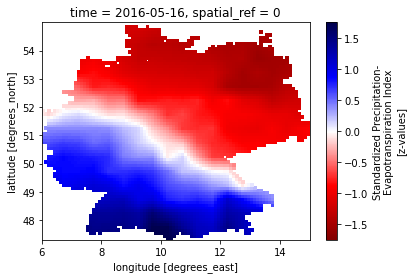
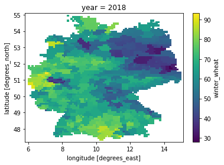
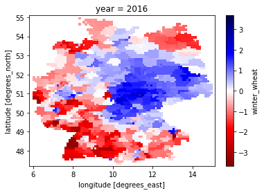
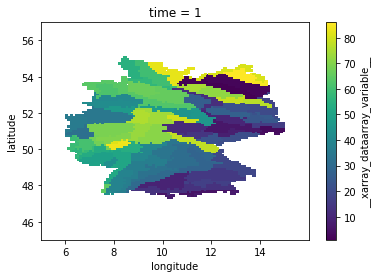
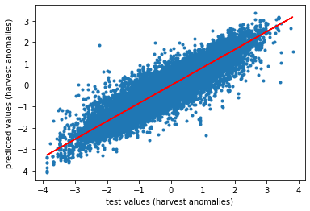
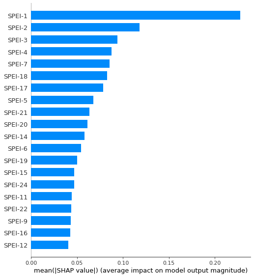
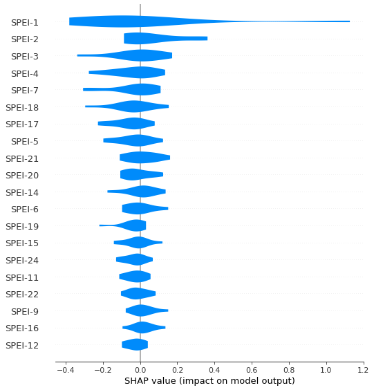

2.14. Florian Ellsäßer: Using a LSTM network and SHAP to determine the impact of drought and season on winter wheat
[1]:
import xarray as xr
import pandas as pd
import numpy as np
import scipy
import datetime as dt
#import rioxarray as rio
import matplotlib.pyplot as plt
%matplotlib inline
2.14.1. load the data
[2]:
# load the data
spei_data = xr.open_dataset(r'C:\Users\Florian\Desktop\Jupyter_Skripts\05_ML_crop_vulnerability\data/spei01_germany.nc')
yield_data = xr.open_dataset(r'C:\Users\Florian\Desktop\Jupyter_Skripts\05_ML_crop_vulnerability\data/all_crops_productivity_gapfilled_detrended.nc4')
yield_index_data = xr.open_dataset(r'C:\Users\Florian\JLUbox\Erntedaten_CROP_Projekt\09_Final_output_files/all_crops_SHI.nc4')
natural_areas_raster = xr.open_dataset('C:/Users/Florian/Desktop/E-OBS_data_25.0e/natural_areas_germany.nc')
phen_data_winterwheat = pd.read_csv('C:/Users/Florian/Desktop/CROP_indices_data/phen_data_gapfilled.csv')
[3]:
# visualize the data for a quick check
spei_data.spei.sel(time='2016-05-16T00:00:00.000000000').plot(cmap='seismic_r')
[3]:
<matplotlib.collections.QuadMesh at 0x1172ac23630>

[4]:
yield_data.winter_wheat.sel(year=2018).plot()
[4]:
<matplotlib.collections.QuadMesh at 0x1172b40bef0>

[5]:
yield_index_data.winter_wheat.sel(year=2016).plot(cmap='seismic_r')
[5]:
<matplotlib.collections.QuadMesh at 0x1172b4dd518>

[6]:
natural_areas_raster = natural_areas_raster.__xarray_dataarray_variable__
natural_areas_raster = natural_areas_raster.where(natural_areas_raster != -9999.)
natural_areas_raster.plot()
[6]:
<matplotlib.collections.QuadMesh at 0x1172b4b2a58>

2.14.2. align the data properties
[7]:
# get the same order of dimensions
# rename year to time in yield data
yield_data = yield_data.rename({'year':'time'})
yield_index = yield_index_data.winter_wheat.rename({'year':'time'})
# transpose dimensions of
spei_data['spei'] = spei_data.spei.transpose('longitude','latitude','time')
[8]:
# create a function to round coordinates (this is taken from the crops package)
def round_coordinates(in_array):
"""
This function rounds the coordinates two two decimals. This prevents errors
due to weird roundings that sometimes appear
Parameters:
in_array (xarray.core.dataarray.DataArray) = input Data array e.g. Tmax
Returns:
in_array (xarray.core.dataarray.DataArray) = array with rounded coordinates
"""
# round longitude
in_array.coords['longitude'] = np.round(in_array.coords['longitude'],2)
# round latitude
in_array.coords['latitude'] = np.round(in_array.coords['latitude'],2)
return in_array
[9]:
print(yield_data.dims)
print(yield_index.dims)
print(spei_data.dims)
Frozen(SortedKeysDict({'latitude': 79, 'longitude': 93, 'time': 32}))
('latitude', 'longitude', 'time')
Frozen(SortedKeysDict({'longitude': 90, 'latitude': 77, 'time': 852}))
[10]:
spei_data = round_coordinates(spei_data)
yield_data = round_coordinates(yield_data)
yield_index = round_coordinates(yield_index)
natural_areas_raster = round_coordinates(natural_areas_raster)
[11]:
# now dims are the same, adjust the extend of the lon and lat dims
# get the dims of the smaller xarray
min_lon = spei_data.longitude.min()
min_lat = spei_data.latitude.min()
max_lon = spei_data.longitude.max()
max_lat = spei_data.latitude.max()
#create a mask for later
mask_lon_spei_data = (spei_data.longitude >= min_lon) & (spei_data.longitude <= max_lon)
mask_lat_spei_data = (spei_data.latitude >= min_lat) & (spei_data.latitude <= max_lat)
# now drop the coords that are too big
yield_data = yield_data.where(mask_lon_spei_data.longitude, drop=True)
yield_data = yield_data.where(mask_lat_spei_data.latitude, drop=True)
yield_index = yield_index.where(mask_lon_spei_data.longitude, drop=True)
yield_index = yield_index.where(mask_lat_spei_data.latitude, drop=True)
natural_areas_raster = natural_areas_raster.where(mask_lon_spei_data.longitude, drop=True)
natural_areas_raster = natural_areas_raster.where(mask_lat_spei_data.latitude, drop=True)
# transpose again
spei_data['spei'] = spei_data.spei.transpose('latitude','longitude','time')
#yield_data = yield_data.transpose('longitude','latitude','time')
[12]:
print(yield_data.dims)
print(yield_index.dims)
print(spei_data.dims)
Frozen(SortedKeysDict({'latitude': 77, 'longitude': 90, 'time': 32}))
('latitude', 'longitude', 'time')
Frozen(SortedKeysDict({'latitude': 77, 'longitude': 90, 'time': 852}))
[13]:
# concatenate the data into one set
in_data = xr.concat([natural_areas_raster,yield_data.winter_wheat,yield_index,spei_data.spei], dim='time')
2.14.3. apply ufunc to go through the raster cells
[ ]:
## use apply ufunc to go through the xarrays along the time coordinate
# the purpose of this is to create a list of lists that can later be converted into a pandas data frame
# for each harvest date, we want the previous 24 month of SPEI data
test_list = []
test_list.append(['harvest_year','harvest_month','natural_area','yield','index']+
['SPEI'+str(i) for i in range(1,25)])
# first we create a yield_calculation class and a function to return the three best years
class calcualte_impact:
def __init__(self,in_time):
self.in_time = in_time
pass
# now define a function that takes the yield data and returns the three best years
def run_model(self, in_data):
# first get the times
in_time_index = self.in_time[1:33]
in_time_yield = self.in_time[33:65]
in_time_spei = self.in_time[65:]
# the get the data
natural_area = in_data[0]
index_data = in_data[1:33]
yield_data = in_data[33:65]
spei_data = in_data[65:]
if np.isnan(spei_data).all():
# create a list with the length of total_years_in_data full of Nones
result = [None] * len(index_data)
return np.array(result)
else:
# create a pandas dataframe from in_time_yield and yield_data
yield_df = pd.DataFrame({'time': in_time_yield, 'yield': yield_data, 'index':index_data},
columns=['time', 'yield','index'])
# add a column for the harvest dates
yield_df['natural_area'] = [natural_area]*len(index_data)
harvest_date_list = []
for year in in_time_yield:
try:
harvest_date = phen_data_winterwheat[(phen_data_winterwheat.natural_area_group_code == natural_area) &
(phen_data_winterwheat.reference_year == int(year))]['start_date'].values[0]
harvest_date_list.append(harvest_date)
except:
harvest_date_list.append(None)
# add the harvest date to the df
yield_df['harvest_date'] = harvest_date_list
# convert the time strings to datetime objects
yield_df['harvest_date'] = yield_df['harvest_date'].astype('datetime64[ns]')
# convert the time strings to datetime objects
yield_df['harvest_date'] = yield_df['harvest_date'].astype('datetime64[ns]')
yield_df['harvest_date'] = pd.to_datetime(yield_df['harvest_date']).apply(lambda x: x.date())
# create a column for years and month
yield_df['harvest_year'] = pd.DatetimeIndex(yield_df['harvest_date']).year
yield_df['harvest_month'] = pd.DatetimeIndex(yield_df['harvest_date']).month
# create the same for in_time spei and spei data
spei_df = pd.DataFrame({'time': in_time_spei, 'spei': spei_data}, columns=['time', 'spei'])
# convert the time strings to datetime objects
spei_df['time'] = spei_df['time'].astype('datetime64[ns]')
spei_df['time'] = pd.to_datetime(spei_df['time']).apply(lambda x: x.date())
# create a column for years and month
spei_df['year'] = pd.DatetimeIndex(spei_df['time']).year
spei_df['month'] = pd.DatetimeIndex(spei_df['time']).month
# now form an output for every year: year, harvest_month, natural_area, index, yield, 24 SPEI
for index, row in yield_df.iterrows():
# get the SPEI for each harvest month
index_df = spei_df[(spei_df.year==yield_df['harvest_year'][index])&
(spei_df.month==yield_df['harvest_month'][index])]
try:
new_index = index_df.index.values.astype('int')[0]
# create a range of indices +23
index_df_range = list(range(new_index,new_index+24))
spei_range = spei_df.iloc[index_df_range]['spei'].values
except:
spei_range = [None]*24
# append all to a list
test_list.append([yield_df['harvest_year'][index],
yield_df['harvest_month'][index],
yield_df['natural_area'][index],
yield_df['index'][index],
yield_df['yield'][index]]+
# list(spei_range).reverse()
list(spei_range)
)
return np.array(yield_df['harvest_month'])
# now we create an object and give it the in_years of the yield data
yield_object = calcualte_impact(in_data.time)
# now we can apply ufunc and get the years with the highest productivity
test_out = xr.apply_ufunc(yield_object.run_model,
in_data,
input_core_dims=[['time']],
output_core_dims=[['year']],
dask = 'parallelized',
vectorize = True)
[ ]:
df = pd.DataFrame(test_list)
df.columns = df.iloc[0]
df = df[1:]
df.head()
[ ]:
# revove all the rows with a Nan
df.dropna(inplace=True)
df = df.reset_index(drop=True)
[ ]:
df.to_csv('C:/Users/Florian/Desktop/Jupyter_Skripts/05_ML_crop_vulnerability/data/yield_spei_data.csv')
[ ]:
df
2.14.4. ML part
[23]:
import math
from keras.models import Sequential
from keras.layers import Dense
from keras.layers import LSTM
from sklearn.preprocessing import MinMaxScaler
from sklearn.metrics import mean_squared_error
import tensorflow as tf
import time
from sklearn.metrics import r2_score
from sklearn.model_selection import train_test_split
import keras
from keras.callbacks import EarlyStopping
from keras.models import load_model
from keras.callbacks import ModelCheckpoint
from tensorflow.keras import optimizers
Using TensorFlow backend.
C:\Users\Florian\anaconda3\envs\yield_ml_2\lib\site-packages\tensorflow\python\framework\dtypes.py:516: FutureWarning: Passing (type, 1) or '1type' as a synonym of type is deprecated; in a future version of numpy, it will be understood as (type, (1,)) / '(1,)type'.
_np_qint8 = np.dtype([("qint8", np.int8, 1)])
C:\Users\Florian\anaconda3\envs\yield_ml_2\lib\site-packages\tensorflow\python\framework\dtypes.py:517: FutureWarning: Passing (type, 1) or '1type' as a synonym of type is deprecated; in a future version of numpy, it will be understood as (type, (1,)) / '(1,)type'.
_np_quint8 = np.dtype([("quint8", np.uint8, 1)])
C:\Users\Florian\anaconda3\envs\yield_ml_2\lib\site-packages\tensorflow\python\framework\dtypes.py:518: FutureWarning: Passing (type, 1) or '1type' as a synonym of type is deprecated; in a future version of numpy, it will be understood as (type, (1,)) / '(1,)type'.
_np_qint16 = np.dtype([("qint16", np.int16, 1)])
C:\Users\Florian\anaconda3\envs\yield_ml_2\lib\site-packages\tensorflow\python\framework\dtypes.py:519: FutureWarning: Passing (type, 1) or '1type' as a synonym of type is deprecated; in a future version of numpy, it will be understood as (type, (1,)) / '(1,)type'.
_np_quint16 = np.dtype([("quint16", np.uint16, 1)])
C:\Users\Florian\anaconda3\envs\yield_ml_2\lib\site-packages\tensorflow\python\framework\dtypes.py:520: FutureWarning: Passing (type, 1) or '1type' as a synonym of type is deprecated; in a future version of numpy, it will be understood as (type, (1,)) / '(1,)type'.
_np_qint32 = np.dtype([("qint32", np.int32, 1)])
C:\Users\Florian\anaconda3\envs\yield_ml_2\lib\site-packages\tensorflow\python\framework\dtypes.py:525: FutureWarning: Passing (type, 1) or '1type' as a synonym of type is deprecated; in a future version of numpy, it will be understood as (type, (1,)) / '(1,)type'.
np_resource = np.dtype([("resource", np.ubyte, 1)])
C:\Users\Florian\anaconda3\envs\yield_ml_2\lib\site-packages\tensorboard\compat\tensorflow_stub\dtypes.py:541: FutureWarning: Passing (type, 1) or '1type' as a synonym of type is deprecated; in a future version of numpy, it will be understood as (type, (1,)) / '(1,)type'.
_np_qint8 = np.dtype([("qint8", np.int8, 1)])
C:\Users\Florian\anaconda3\envs\yield_ml_2\lib\site-packages\tensorboard\compat\tensorflow_stub\dtypes.py:542: FutureWarning: Passing (type, 1) or '1type' as a synonym of type is deprecated; in a future version of numpy, it will be understood as (type, (1,)) / '(1,)type'.
_np_quint8 = np.dtype([("quint8", np.uint8, 1)])
C:\Users\Florian\anaconda3\envs\yield_ml_2\lib\site-packages\tensorboard\compat\tensorflow_stub\dtypes.py:543: FutureWarning: Passing (type, 1) or '1type' as a synonym of type is deprecated; in a future version of numpy, it will be understood as (type, (1,)) / '(1,)type'.
_np_qint16 = np.dtype([("qint16", np.int16, 1)])
C:\Users\Florian\anaconda3\envs\yield_ml_2\lib\site-packages\tensorboard\compat\tensorflow_stub\dtypes.py:544: FutureWarning: Passing (type, 1) or '1type' as a synonym of type is deprecated; in a future version of numpy, it will be understood as (type, (1,)) / '(1,)type'.
_np_quint16 = np.dtype([("quint16", np.uint16, 1)])
C:\Users\Florian\anaconda3\envs\yield_ml_2\lib\site-packages\tensorboard\compat\tensorflow_stub\dtypes.py:545: FutureWarning: Passing (type, 1) or '1type' as a synonym of type is deprecated; in a future version of numpy, it will be understood as (type, (1,)) / '(1,)type'.
_np_qint32 = np.dtype([("qint32", np.int32, 1)])
C:\Users\Florian\anaconda3\envs\yield_ml_2\lib\site-packages\tensorboard\compat\tensorflow_stub\dtypes.py:550: FutureWarning: Passing (type, 1) or '1type' as a synonym of type is deprecated; in a future version of numpy, it will be understood as (type, (1,)) / '(1,)type'.
np_resource = np.dtype([("resource", np.ubyte, 1)])
[24]:
# on LSTMs: https://machinelearningmastery.com/gentle-introduction-long-short-term-memory-networks-experts/
# create data similar to this:
# based on this: https://machinelearningmastery.com/how-to-develop-lstm-models-for-time-series-forecasting/
# X -> array([[10, 20, 30],
# [20, 30, 40],
# [30, 40, 50],
# [40, 50, 60],
# [50, 60, 70],
# [60, 70, 80]])
# y -> array([40, 50, 60, 70, 80, 90])
[25]:
# read the data again
df = pd.read_csv('C:/Users/Florian/Desktop/Jupyter_Skripts/05_ML_crop_vulnerability/data/yield_spei_data.csv')
2.14.4.1. do with all data
[26]:
# create X and y data
X = np.array(df[['SPEI1', 'SPEI2', 'SPEI3', 'SPEI4', 'SPEI5', 'SPEI6', 'SPEI7',
'SPEI8', 'SPEI9', 'SPEI10', 'SPEI11', 'SPEI12', 'SPEI13', 'SPEI14',
'SPEI15', 'SPEI16', 'SPEI17', 'SPEI18', 'SPEI19', 'SPEI20',
'SPEI21', 'SPEI22', 'SPEI23', 'SPEI24']].values.tolist())
y = np.array(df['index'].values.tolist())
[27]:
# create train and test data by splitting
X_train, X_test, y_train, y_test = train_test_split(X, y, test_size=0.33)
[28]:
# define model
n_steps = 24 # --> month of SPEI
n_features = 1
model = Sequential()
model.add(LSTM(50, activation='relu', input_shape=(n_steps, n_features)))
model.add(Dense(1))
model.compile(optimizer='adam', loss='mse')
[29]:
# reshape from [samples, timesteps] into [samples, timesteps, features]
X_train = X_train.reshape((X_train.shape[0], X_train.shape[1], n_features))
[30]:
# fit model -> outcommented because it takes like 4h
#model.fit(X_train, y_train, epochs=200, verbose=0)
[31]:
# save the model
#model.save('C:/Users/Florian/Desktop/Jupyter_Skripts/05_ML_crop_vulnerability/models/model_v001')
[32]:
# load the model again
model = keras.models.load_model('C:/Users/Florian/Desktop/Jupyter_Skripts/05_ML_crop_vulnerability/models/model_v001')
WARNING:tensorflow:From C:\Users\Florian\anaconda3\envs\yield_ml_2\lib\site-packages\keras\backend\tensorflow_backend.py:422: The name tf.global_variables is deprecated. Please use tf.compat.v1.global_variables instead.
[33]:
# test the model
X_test = X_test.reshape((X_test.shape[0], X_test.shape[1], n_features))
y_pred = model.predict(X_test, verbose=0)
# reformat the output
y_pred_list = []
for item in y_pred:
y_pred_list.append(item[0])
y_pred = y_pred_list
[34]:
# plot it
plt.scatter(y_test,y_pred, marker='.')
m, b = np.polyfit(y_test,y_pred, 1)
plt.plot(y_test, m*y_test + b, color='red')
plt.xlabel('test values (harvest anomalies)')
plt.ylabel('predicted values (harvest anomalies)')
# check all other things
n_pred = len(y_pred)
slope, intercept, r_value, p_value, std_err = scipy.stats.linregress(y_pred, y_test)
print('n predictions: ' + str(n_pred))
print('slope: ' + str(slope))
print('intercept: ' + str(intercept))
print('r: ' + str(r_value))
print('r²: ' + str(r_value**2))
print('p-value: ' + str(p_value))
print('standard error: ' +str(std_err))
plt.savefig(r'C:\Users\Florian\Desktop\Jupyter_Skripts\05_ML_crop_vulnerability/figures/scatterplot.png', format='png', dpi=300, bbox_inches='tight')
n predictions: 45036
slope: 1.0054949082304028
intercept: 0.01712772477690782
r: 0.9177724506004394
r²: 0.8423062710811361
p-value: 0.0
standard error: 0.002050131923845098

2.14.5. now implement shap for variable importance
[35]:
import shap
C:\Users\Florian\anaconda3\envs\yield_ml_2\lib\site-packages\tqdm\auto.py:22: TqdmWarning: IProgress not found. Please update jupyter and ipywidgets. See https://ipywidgets.readthedocs.io/en/stable/user_install.html
from .autonotebook import tqdm as notebook_tqdm
[36]:
# create a smaller subset
test_images= X_test[100:110]
test_labels=y_test[100:110]
[37]:
# fit the explainer
explainer = shap.DeepExplainer(model, X_test[0:4999])
shap_values = explainer.shap_values(test_images)
WARNING:tensorflow:From C:\Users\Florian\anaconda3\envs\yield_ml_2\lib\site-packages\shap\explainers\tf_utils.py:28: The name tf.keras.backend.get_session is deprecated. Please use tf.compat.v1.keras.backend.get_session instead.
keras is no longer supported, please use tf.keras instead.
WARNING:tensorflow:From C:\Users\Florian\anaconda3\envs\yield_ml_2\lib\site-packages\shap\explainers\_deep\deep_tf.py:631: add_dispatch_support.<locals>.wrapper (from tensorflow.python.ops.array_ops) is deprecated and will be removed in a future version.
Instructions for updating:
Use tf.where in 2.0, which has the same broadcast rule as np.where
[38]:
# reformat output
shap_list=[]
for row in shap_values[0]:
row_list = []
for item in row:
row_list.append(item[0])
#print(row_list)
shap_list.append(row_list)
# make it numpy array
shap_array = np.array(shap_list)
[39]:
# create a feature name list
feature_names = ['SPEI-24','SPEI-23','SPEI-22','SPEI-21','SPEI-20','SPEI-19',
'SPEI-18','SPEI-17','SPEI-16','SPEI-15','SPEI-14','SPEI-13',
'SPEI-12','SPEI-11','SPEI-10','SPEI-9','SPEI-8','SPEI-7',
'SPEI-6','SPEI-5','SPEI-4','SPEI-3','SPEI-2','SPEI-1']
[40]:
# plot and save the figure
shap.summary_plot(shap_array, plot_type = 'bar', feature_names = np.array(feature_names), show=False)
plt.savefig(r'C:\Users\Florian\Desktop\Jupyter_Skripts\05_ML_crop_vulnerability/figures/barplot.png', format='png', dpi=300, bbox_inches='tight')
plt.show()

[41]:
# plot and save the figure
shap.summary_plot(shap_array,feature_names = np.array(feature_names),plot_type='violin', show=False)
plt.savefig(r'C:\Users\Florian\Desktop\Jupyter_Skripts\05_ML_crop_vulnerability/figures/violinplot.png', format='png', dpi=300, bbox_inches='tight')
plt.show()

[ ]:
[ ]: